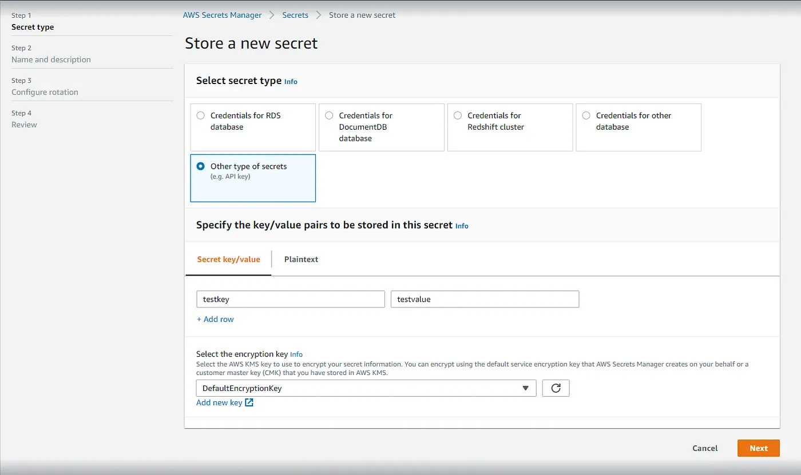

Mengubah environment variable di produksi bisa menjadi proses yang rumit dan memakan waktu, terutama jika Anda harus membuat Image baru AMI AWS setiap kali ada perubahan. AWS Secrets Manager menawarkan solusi yang lebih efisien dan aman.
Manfaat AWS Secrets Manager
- Keamanan: Menyimpan secrets dengan aman dan hanya diakses oleh pihak yang berwenang.
- Efisiensi: Memperbarui secrets tanpa membuat AMI baru atau mengubah kode aplikasi.
- Biaya Terjangkau: $0.40 per secret per bulan, dengan setiap secret bisa berisi beberapa key=value pairs hingga 10KB.

AWS Secrets Manager Dashboard
Langkah-Langkah Menggunakan AWS Secrets Manager
1. Install AWS CLI Terbaru
apt-get install -y python3-pip jq
pip3 install awscli --upgrade2. Ekstraksi Secrets ke File .env
AWS_SECRET_ID="my-super-secret-secret"
AWS_REGION="ap-southeast-2"
ENVFILE="/srv/app/.env"
# Export the secret to .env
aws secretsmanager get-secret-value --secret-id $AWS_SECRET_ID --region $AWS_REGION | \
jq -r '.SecretString' | \
jq -r "to_entries|map(\"\(.key)=\\\"\(.value|tostring)\\\"\")|.[]" > $ENVFILEKey Features
| Feature | Benefit |
|---|---|
| Centralized Management | Single source of truth for secrets |
| Version Control | Track changes and rollback if needed |
| Access Control | Fine-grained IAM permissions |
| Automatic Rotation | Schedule secret updates |
Best Practices
- Use IAM roles for EC2 instances
- Implement secret rotation
- Monitor secret access
- Backup secrets regularly
- Use encryption at rest